| 나물 · 장아찌
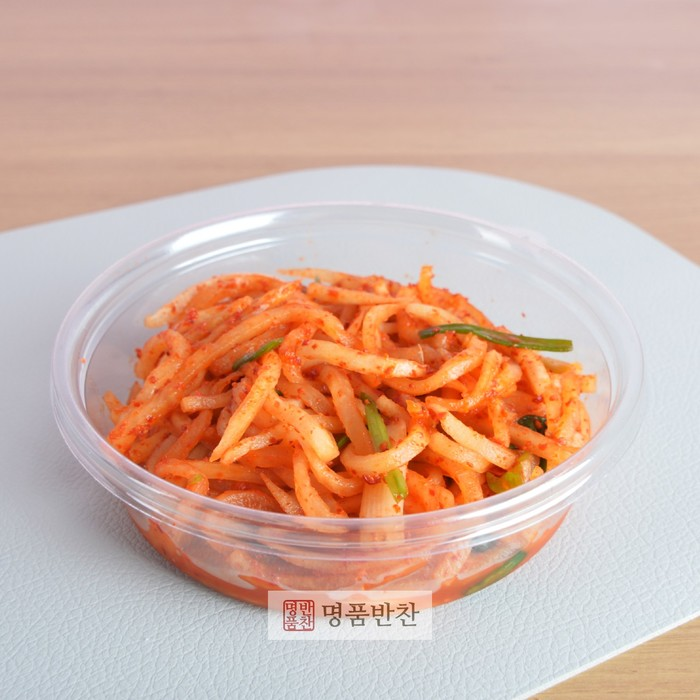
무생채무침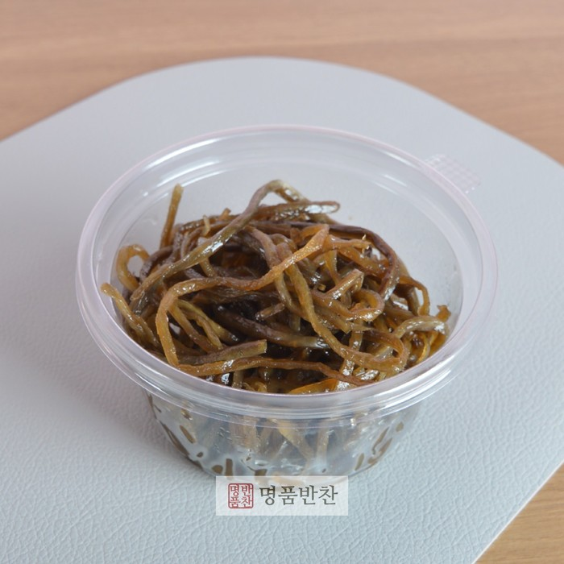
우엉채볶음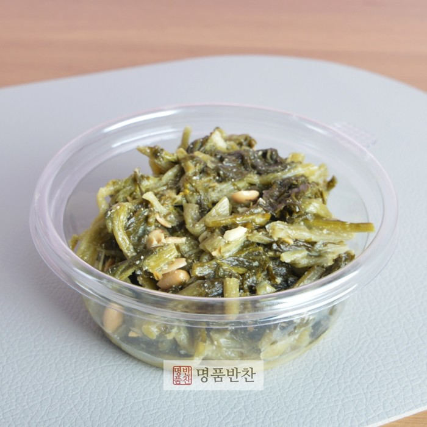
시래기된장무침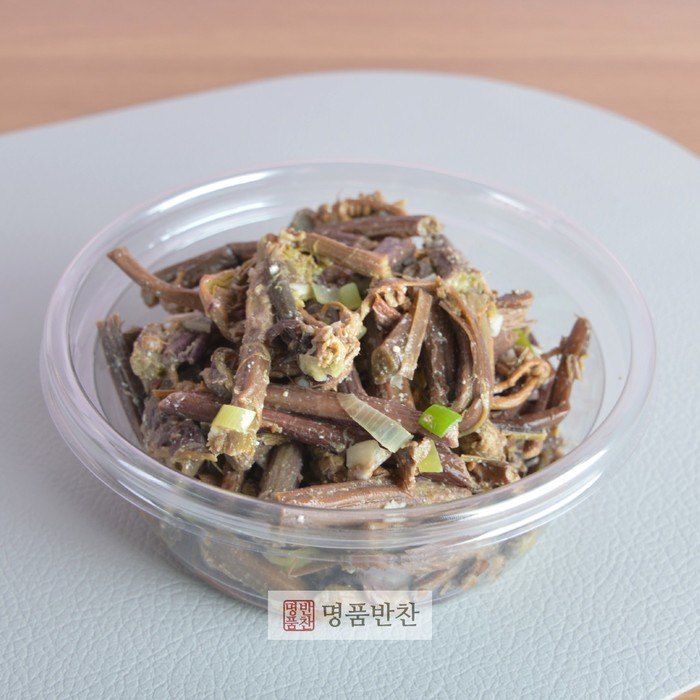
고사리볶음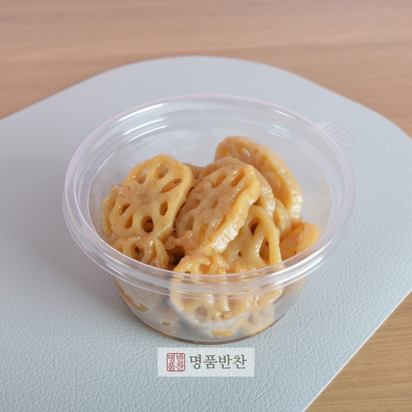
연근조림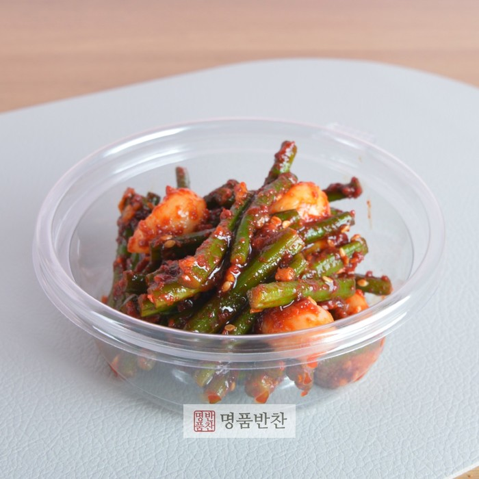
양념마늘쫑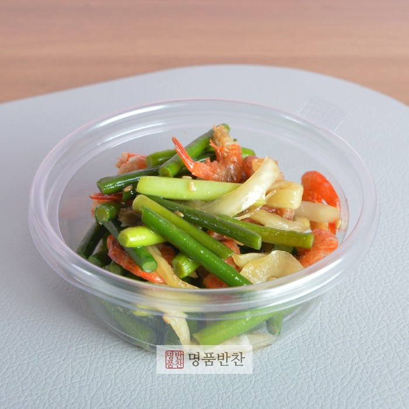
마늘쫑건새우볶음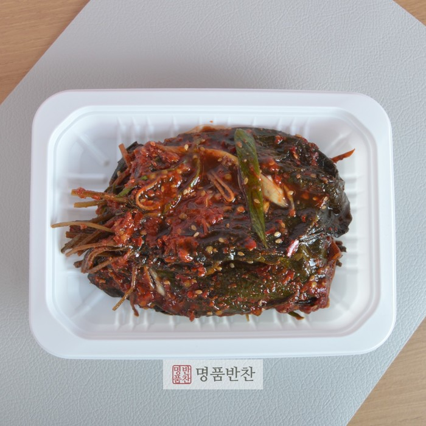
양념깻잎절임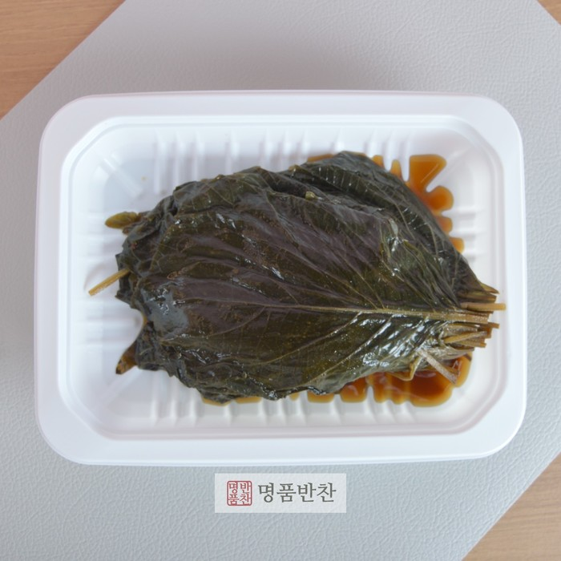
간장깻잎절임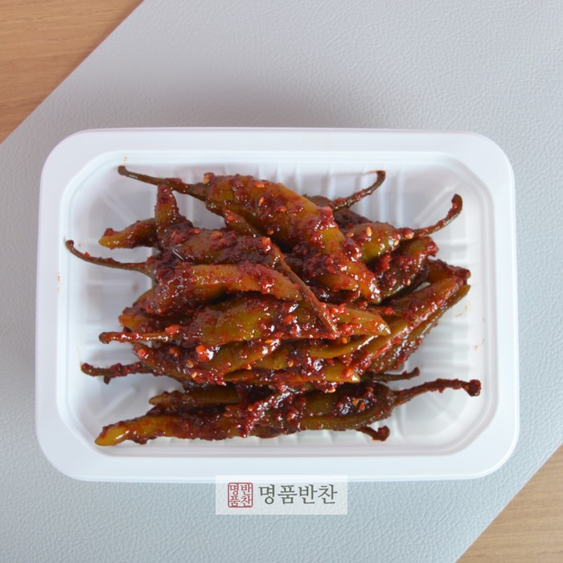
양념고추장아찌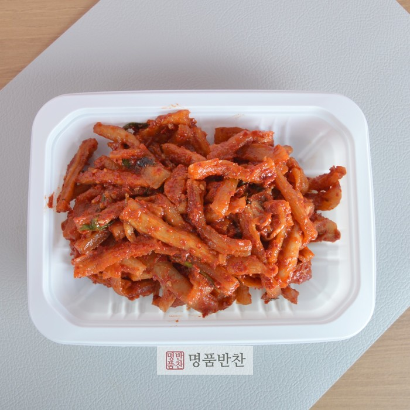
무말랭이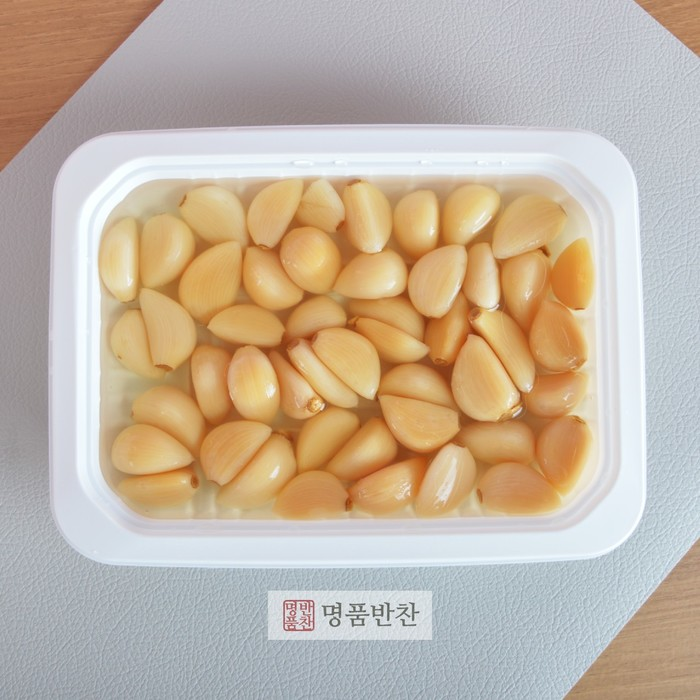
마늘초절임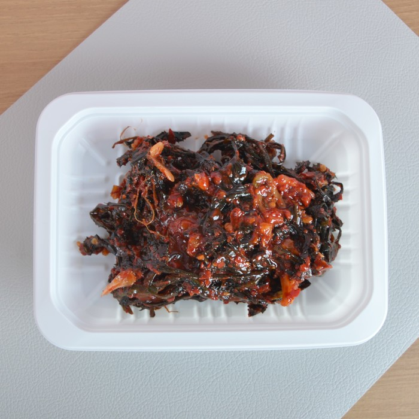
고들빼기무침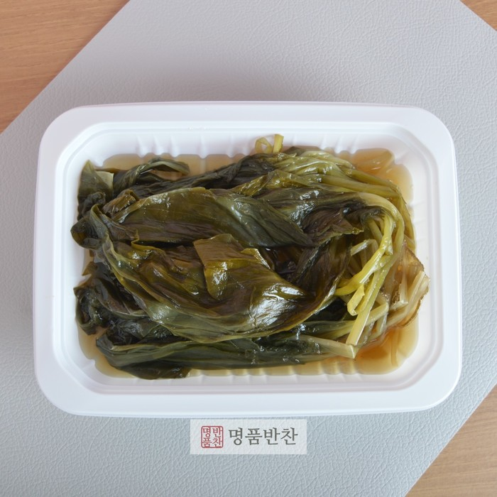
명이나물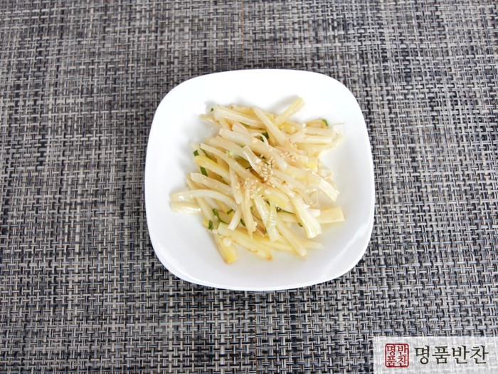
흰도라지볶음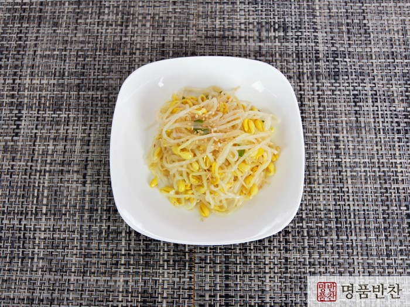
흰콩나물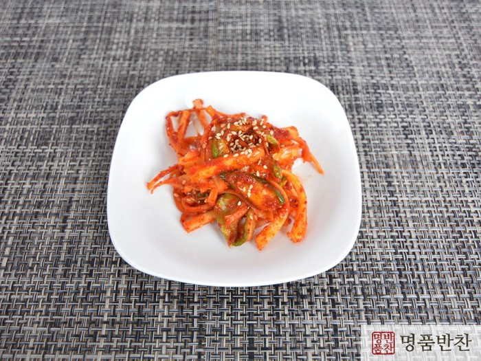
도라지오이무침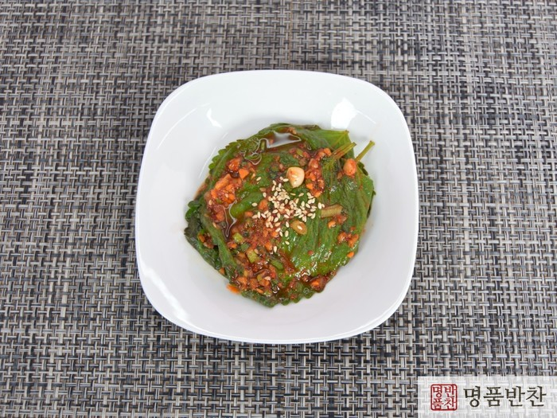
생깻잎무침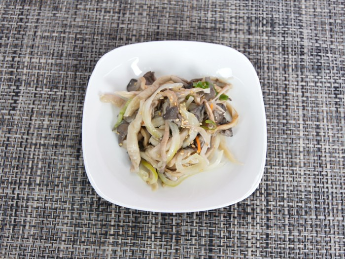
느타리버섯볶음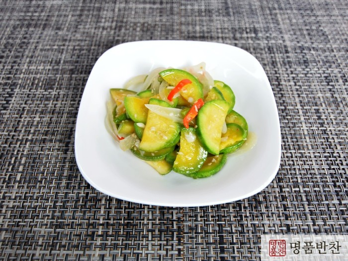
애호박볶음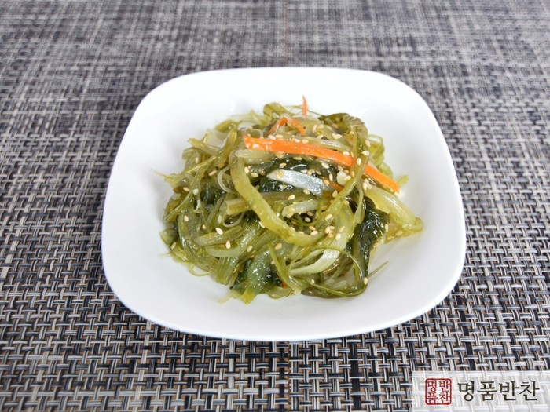
미역줄기볶음- 양념콩나물
- 숙주나물
- 양파장아찌
- 참나물
- 콩잎장아찌
- 메추리알어묵볶음
- 꽈리고추계란조림
- 아삭이된장고추
- 표고버섯볶음
- 시금치
- 건파래무침
- 가지나물
- 청경채
- 간장마늘
- 비듬나물
- 양파오이피클
- 꽈리고추찜
- 고구마순볶음
- 감자채볶음
- 파래초무침
- 취나물
- 된장콩잎
- 청포채
- 삼단나물
- 양배추쌈
- 간장삭힌고추
- 육단나물